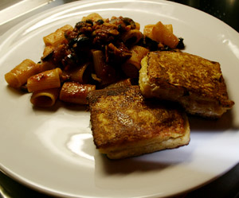

Mozzarella in Carrozza
5 von 6Rand von Toastbrot abschneiden und mit Mozzarellascheiben belegen. Mit Salz, Pfeffer und Oregano würzen und mit zweiter Brotscheiben bedecken. Ränder mit kaltem Wasser leicht befeuchten und zusammendrücken. Beidseitig mit etwas Mehl bestäuben. 2 Eier, 2 EL Milch, Salz und Pfeffer vermengen und die Sandwiches darin wenden. In Olivenöl beidseitig golbraun anbraten.
